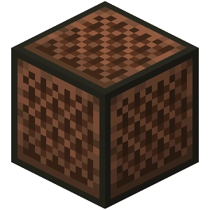
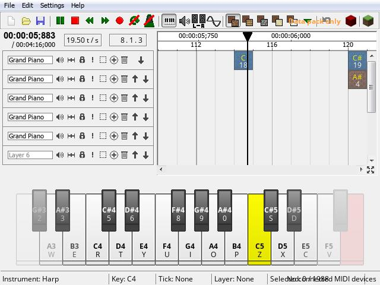
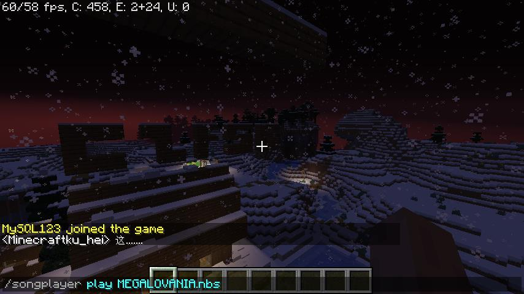
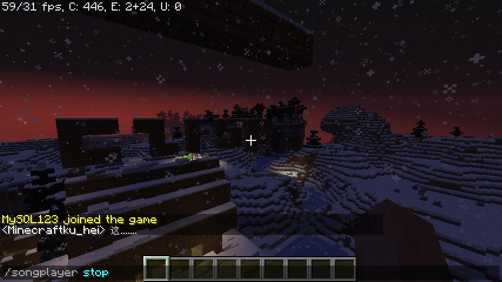
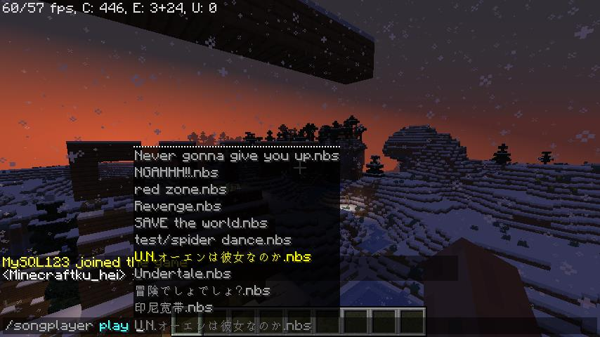

NBS Player是一个简单、快速、精简的Minecraft NBS红石音乐播放器服务端插件。支持远程下载nbs文件。仅需使用简单的指令即可实现播放、停止操作。还可以实现下载音乐（必须为直链），下载后可以直接播放
支持Minecraft 1.14以上的版本
支持Minecraft 1.14以上的版本




播放音乐
使用/songplayer play + nbs文件命令可以直接播放现有或者已上传的音乐，以红石音乐的音色播放，而且支持循环，你播放了音乐后附近的玩家也可以听见
使用/songplayer play + nbs文件命令可以直接播放现有或者已上传的音乐，以红石音乐的音色播放，而且支持循环，你播放了音乐后附近的玩家也可以听见
暂停播放
使用/songplayer stop命令可以停止你的播放
使用/songplayer stop命令可以停止你的播放
播放上传的音乐
使用/songplayer play 你的链接命令可以下载远程音乐（必须是nbs文件的直链）。
使用/songplayer play 你的链接命令可以下载远程音乐（必须是nbs文件的直链）。
创建你的音乐
使用NoteBlockStudio创作你自己的NBS音乐，也可以导入Midi文件稍加处理，即可完成